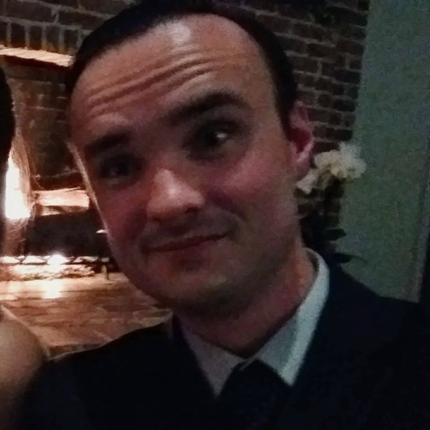
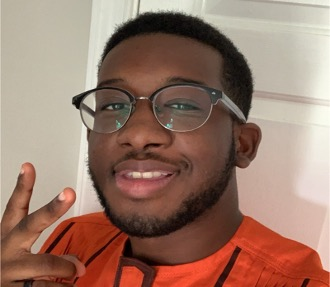
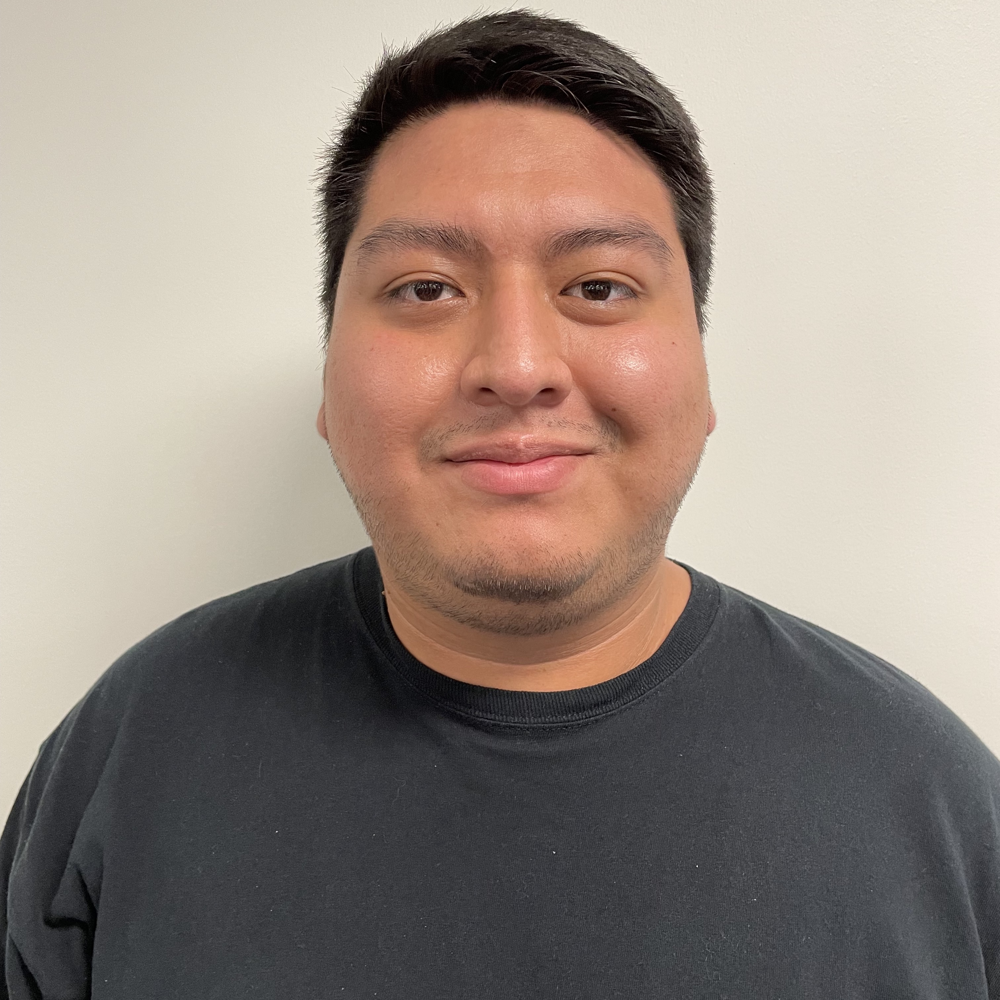
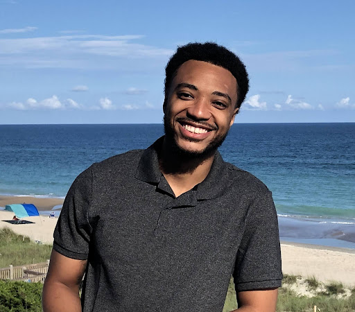
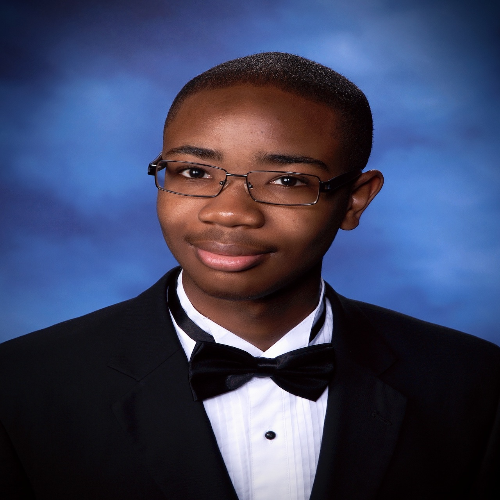

Cody Cochran
Algorithm Designer
Database Manager(Backend)
Cody Cochran is a senior undergraduate at Old Dominion University who is persuing a bachelor's in Computer Science. He has worked for 12 years as a technician and field engineer of radio equipment. His hobbies include programming, circuit building, and analyzing problems in mathematics that catch his interest.

Ben Paul
Backend Specialist
Docker Specialist
Ben is currently a senior at Old Dominion University. He is majoring in Computer Science with a minor in Cybersecurity. He is currently working as an IT Helpdesk Support Technician. He is interested in pursuing a career in software development after obtaining his bachelor’s degree. In his free time he likes to play video games, read, and biking.

Backend Developer
John is a senior undergraduate at Old Dominion University pursuing a B.S. in Computer Science. John is a 10 year Navy veteran and currently works as a Cyber Security Analyst with Leidos. His hobbies include running, Muay Thai, programming, and spending time with his wife and 3 children.
John Cartwright
Backend Developer
Secondary Role
John is a senior undergraduate at Old Dominion University pursuing a B.S. in Computer Science. John is a 10 year Navy veteran and currently works as a Cyber Security Analyst with Leidos. His hobbies include running, Muay Thai, programming, and spending time with his wife and 3 children.

Front end Developer
Albert is a senior undergraduate at Old Dominion University and is pursuing a bachelor's in Computer Science. He currently works at Chipotle as a crew member. His hobbies include playing video games, playing soccer, hanging out with friends and cooking delicious food!
Albert Ayitey-Adjin
Front end Developer
Web Developer
Albert is a senior undergraduate at Old Dominion University and is pursuing a bachelor's in Computer Science. He currently works at Chipotle as a crew member. His hobbies include playing video games, playing soccer, hanging out with friends and cooking delicious food!

Webmaster
Marcelo Vargas is a senior undergraduate at Old Dominion University pursuing a B.S. in Computer Science. Marcelo has been working for Wells Fargo for 4 years and in banking for 5 years overall. Marcelo's hobbies include playing soccer, watching soccer, playing video games, listening to music and spending time with his family.
Marcelo
Webmaster
Algorithm Designer
Marcelo Vargas is a senior undergraduate at Old Dominion University pursuing a B.S. in Computer Science. Marcelo has been working for Wells Fargo for 4 years and in banking for 5 years overall. Marcelo's hobbies include playing soccer, watching soccer, playing video games, listening to music and spending time with his family.

Front End developer
Richard Connor is a Senior at Old Dominion University studying Computer Science. He plans to be a software developer with a specialization in app/web development. Currently he has been working as a LG expert at Best Buy for three years and seeking to find a front-end developer position after University. Besides programming he also loves hanging out with friends and playing video games. He's constantly seeking new knowledge and enjoy playing the piano and learning French. He wants everyone to feel free to connect with him via social media or reach out via email. He would absolutely love to work on an open-source project. Let's connect and make something amazing together!
Richard Connor
Front End developer
UI Designer
Richard Connor is a Senior at Old Dominion University studying Computer Science. He plans to be a software developer with a specialization in app/web development. Currently he has been working as a LG expert at Best Buy for three years and seeking to find a front-end developer position after University. Besides programming he also loves hanging out with friends and playing video games. He's constantly seeking new knowledge and enjoy playing the piano and learning French. He wants everyone to feel free to connect with him via social media or reach out via email. He would absolutely love to work on an open-source project. Let's connect and make something amazing together!

Front End developer
Christian is currently a senior at Old Dominion University. He has already obtained an associates degree in Computer Science at Tidewater Community College and is currently pursuing a bachelor’s degree in computer science and a minor in cyber security. He has been working as an Amazon Warehouse Associate for over 4 years; considering to apply for Amazon’s IT Department. He is interested in the roles of being a software developer, documentation specialist, and data specialist.
Christian Eulle
Front End developer
Documentation Specialist
Christian is currently a senior at Old Dominion University. He has already obtained an associates degree in Computer Science at Tidewater Community College and is currently pursuing a bachelor’s degree in computer science and a minor in cyber security. He has been working as an Amazon Warehouse Associate for over 4 years; considering to apply for Amazon’s IT Department. He is interested in the roles of being a software developer, documentation specialist, and data specialist.